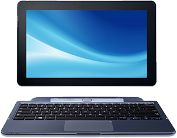

Рабочее место мастера «Доктор-060ММ»

НАЗНАЧЕНИЕ И ОБЛАСТЬ ПРИМЕНЕНИЯ
Рабочее место мастера позволяет выполнить:
- сбор, обработку и хранение данных, полученных от приборов серии «Доктор-060» в результате выполнения операций диагностики;
- управление процессом контроля и диагностики;
- передачу нормированных значений диагностируемых параметров на приборы серии «Доктор- 060»;
- самодиагностику системы;
- визуальное отображение информации о ходе процесса диагностики на дисплее;
- формирование протоколов испытаний с возможностью вывода на печать;
- передачу данных в общую базу для создания электронного паспорта подвижного состава.
ФУНКЦИОНАЛЬНЫЕ ВОЗМОЖНОСТИ
Рабочее место мастера входит в состав Серии мобильных приборов контроля и диагностики.
“Доктор-060” и представляет собой персональный компьютер со специализированным программным обеспечением.
Программное обеспечение рабочего места мастера позволяет пользователю:
- получать информацию о сериях локомотивов, ремонтируемых на предприятии, о перечне их съемного оборудования;
- получать информацию о категориях, типах электрооборудования и их параметрах, которые могут быть диагностированы с помощью приборов серии «Доктор-060»;
- формировать базу данных нормированных значений диагностируемых параметров;
- формировать список ремонтного персонала предприятия;
- вести учет локомотивов, поступивших в ремонт;
- вести учет электрооборудования, поступившего в ремонт;
- получать информацию о результатах диагностики электрооборудования;
- вести учет комплектации локомотивов, выходящих из ремонта.
ТЕХНИЧЕСКИЕ ХАРАКТЕРИСТИКИ
| Параметры |
Значение |
| Габаритные размеры, мм |
500 х 300 х 25 |
| Потребляемая мощность, кВт |
0.2 |
| Масса, кг |
5 |